WILD
| Photo |
Name |
Number |
Position |
Shot |
Height |
Weight |
Birthday |
Hometown |
|
J.T. Brown |
23 |
RW |
R |
5' 10" |
166 |
Jul 2, 1990 |
Burnsville, MN, USA |
|
Charlie Coyle |
3 |
C |
R |
6' 3" |
220 |
Mar 2, 1992 |
E. Weymouth, MA, USA |
| 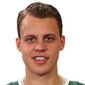 |
Joel Eriksson Ek |
14 |
C |
L |
6' 1" |
208 |
Jan 29, 1997 |
Karlstad, SWE |
|
Eric Fehr |
21 |
C |
R |
6' 4" |
209 |
Sep 7, 1985 |
Winkler, MB, CAN |
|
Marcus Foligno |
17 |
LW |
L |
6' 3" |
228 |
Aug 10, 1991 |
Buffalo, NY, USA |
| 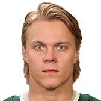 |
Mikael Granlund |
64 |
RW |
L |
5' 10" |
185 |
Feb 26, 1992 |
Oulu, FIN |
| 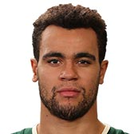 |
Jordan Greenway |
18 |
LW |
L |
6' 6" |
227 |
Feb 16, 1997 |
Canton, NY, USA |
| 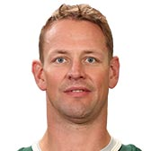 |
Matt Hendricks |
15 |
C |
L |
6' 0" |
211 |
Jun 17, 1981 |
Blaine, MN, USA |
| 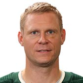 |
Mikko Koivu |
9 |
C |
L |
6' 3" |
219 |
Mar 12, 1983 |
Turku, FIN |
| 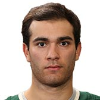 |
Luke Kunin |
19 |
C |
R |
6' 0" |
195 |
Dec 4, 1997 |
Chesterfield, MO, USA |
|
Nino Niederreiter |
22 |
RW |
L |
6' 2" |
218 |
Sep 8, 1992 |
Chur, CHE |
| 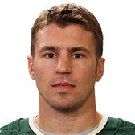 |
Zach Parise |
11 |
LW |
L |
5' 11" |
193 |
Jul 28, 1984 |
Minneapolis, MN, USA |
|
Matt Read |
10 |
RW |
R |
5' 10" |
188 |
Jun 14, 1986 |
Ilderton, ON, CAN |
| 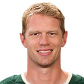 |
Eric Staal |
12 |
C |
L |
6' 4" |
207 |
Oct 29, 1984 |
Thunder Bay, ON, CAN |
|
Jason Zucker |
16 |
LW |
L |
5' 11" |
183 |
Jan 16, 1992 |
Newport Beach, CA, USA |
| Photo |
Name |
Number |
Shot |
Height |
Weight |
Birthday |
Hometown |
|
Jonas Brodin |
25 |
L |
6' 1" |
198 |
Jul 12, 1993 |
Karlstad, SWE |
| 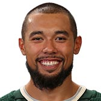 |
Matt Dumba |
24 |
R |
6' 0" |
182 |
Jul 25, 1994 |
Regina, SK, CAN |
|
Greg Pateryn |
29 |
R |
6' 3" |
223 |
Jun 20, 1990 |
Sterling Heights, MI, USA |
|
Nate Prosser |
39 |
R |
6' 2" |
201 |
May 7, 1986 |
Elk River, MN, USA |
|
Nick Seeler |
36 |
L |
6' 2" |
198 |
Jun 3, 1993 |
Eden Prairie, MN, USA |
| 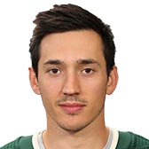 |
Jared Spurgeon |
46 |
R |
5' 9" |
167 |
Nov 29, 1989 |
Edmonton, AB, CAN |
| 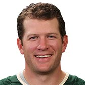 |
Ryan Suter |
20 |
L |
6' 2" |
208 |
Jan 21, 1985 |
Madison, WI, USA |
| Photo |
Name |
Number |
Height |
Weight |
Birthday |
Hometown |
| 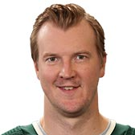 |
Devan Dubnyk |
40 |
6' 6" |
224 |
May 4, 1986 |
Regina, SK, CAN |
|
Alex Stalock |
32 |
6' 0" |
198 |
Jul 28, 1987 |
St. Paul, MN, USA |